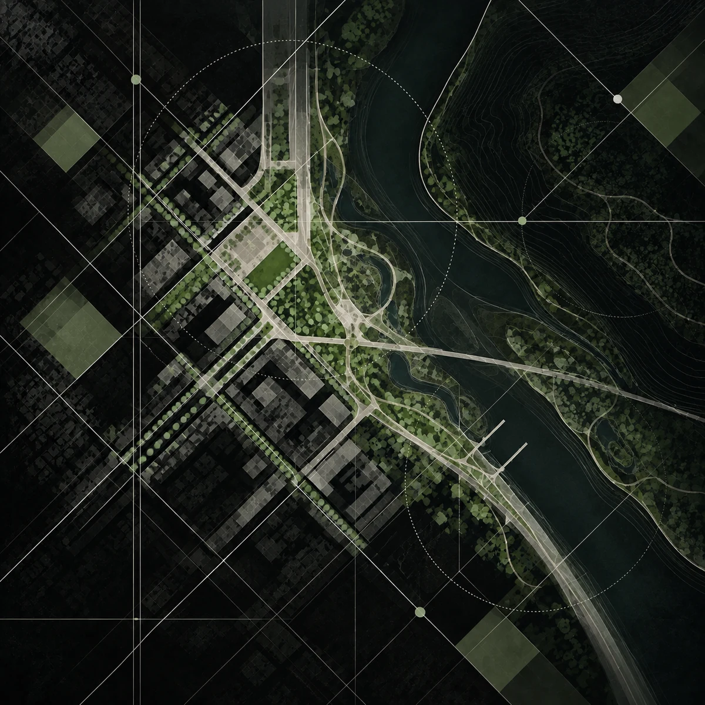

An evolving, evidence-based approach to places, systems and change.
Planomorf is an urban R&D company working at the intersection of spatial planning, urban design, architecture, climate resilience and GeoAI.
We approach spatial development not as a fixed product, but as an evolving process shaped by place, time, evidence and technology. Our work combines research, spatial analysis and design to develop methodologies, decision-support frameworks and implementation-oriented strategies for complex urban and territorial challenges.
By making spatial decisions more measurable, traceable and adaptable, we aim to bridge the gap between research and practice — turning knowledge into better places.
The name Planomorf reflects this approach: spatial thinking that evolves with form, context and changing conditions rather than producing a single static outcome.
